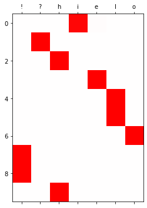
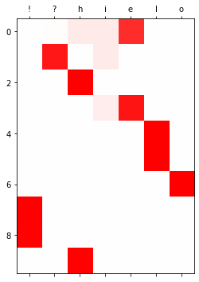

import torch
import matplotlib.pyplot as plt기말고사
1. hi?hello!! (90점)
아래와 같은 데이터가 있다고 하자.
txt = list('hi?hello!!')*100
txt_x = txt[:-1]
txt_y = txt[1:]txt_x[:5], txt_y[:5](['h', 'i', '?', 'h', 'e'], ['i', '?', 'h', 'e', 'l'])txt_x와 txt_y를 이용하여 아래와 같은 순서로 다음문자를 예측하고 싶은 신경망을 설계하고 싶다.
h \(\to\) i \(\to\) ? \(\to\) h \(\to\) e \(\to\) l \(\to\) l \(\to\) o \(\to\) ! \(\to\) ! \(\to\) h \(\to\) i \(\to\) ? \(\to\) h \(\to\) e \(\to\) \(\dots\)
(1)-(6) 의 풀이에 공통적으로 필요한 과정 정리
def f(txt,mapping):
return [mapping[key] for key in txt]
sig = torch.nn.Sigmoid()
soft = torch.nn.Softmax(dim=1)
tanh = torch.nn.Tanh()
mapping = {'!':0, '?':1,'h':2,'i':3,'e':4,'l':5,'o':6}
x= torch.nn.functional.one_hot(torch.tensor(f(txt_x,mapping))).float().to("cuda:0")
y= torch.nn.functional.one_hot(torch.tensor(f(txt_y,mapping))).float().to("cuda:0")(1) torch.nn.RNN()을 이용하여 다음문자를 예측하는 신경망을 설계하고 학습하라.
(풀이)
rnn = torch.nn.RNN(7,8).to("cuda:0")
linr = torch.nn.Linear(8,7).to("cuda:0")
loss_fn = torch.nn.CrossEntropyLoss()
optimizr = torch.optim.Adam(list(rnn.parameters())+list(linr.parameters()),lr=0.1)
_water = torch.zeros(1,8).to("cuda:0")
for epoc in range(500):
## 1
hidden, hT = rnn(x)
output = linr(hidden)
## 2
loss = loss_fn(output,y)
## 3
loss.backward()
## 4
optimizr.step()
optimizr.zero_grad()
yhat=soft(output)
plt.matshow(yhat.to("cpu").data[:10],cmap='bwr',vmin=-1,vmax=1)
plt.xticks(range(7),labels=['!','?','h','i','e','l','o']);(2) torch.nn.RNNCell()을 이용하여 다음문자를 예측하는 신경망을 설계하고 학습하라.
torch.manual_seed(12345)
rnncell = torch.nn.RNNCell(7,8).to("cuda:0")
linr = torch.nn.Linear(8,7).to("cuda:0")
loss_fn = torch.nn.CrossEntropyLoss()
optimizr = torch.optim.Adam(list(rnncell.parameters())+list(linr.parameters()),lr=0.1)for epoc in range(100):
## 1
hidden = []
ht = torch.zeros(8).to("cuda:0")
for xt,yt in zip(x,y):
ht = rnncell(xt,ht)
hidden.append(ht)
hidden = torch.stack(hidden)
output = linr(hidden)
## 2
loss = loss_fn(output,y)
## 3
loss.backward()
## 4
optimizr.step()
optimizr.zero_grad()yhat = soft(output)
yhat[:10].to("cpu").detach().numpy().round(3)array([[0. , 0.005, 0. , 0.982, 0.013, 0. , 0. ],
[0. , 0.999, 0. , 0. , 0. , 0.001, 0. ],
[0. , 0. , 1. , 0. , 0. , 0. , 0. ],
[0. , 0. , 0. , 0.001, 0.999, 0. , 0. ],
[0. , 0. , 0. , 0. , 0. , 1. , 0. ],
[0. , 0. , 0. , 0. , 0. , 1. , 0. ],
[0. , 0. , 0. , 0. , 0. , 0. , 1. ],
[1. , 0. , 0. , 0. , 0. , 0. , 0. ],
[1. , 0. , 0. , 0. , 0. , 0. , 0. ],
[0. , 0. , 1. , 0. , 0. , 0. , 0. ]], dtype=float32)plt.matshow(yhat.to("cpu").data[:10],cmap='bwr',vmin=-1,vmax=1)
plt.xticks(range(7),labels=['!','?','h','i','e','l','o']);(3) torch.nn.Module을 상속받은 클래스를 정의하고 (2)의 결과와 동일한 적합값이 나오는 신경망을 설계한 뒤 학습하라. (초기값을 적절하게 설정할 것)
- class를 이용하지 않으면 점수없음.
- torch.nn.RNN(), torch.nn.RNNCell() 을 이용한 네트워크를 학습시킬시 점수 없음. (초기값을 셋팅하는 용도로는 torch.nn.RNN(), torch.nn.RNNCell()을 코드에 포함시키는 것이 가능)
class rNNCell(torch.nn.Module):
def __init__(self):
super().__init__()
self.i2h = torch.nn.Linear(7,8)
self.h2h = torch.nn.Linear(8,8)
self.tanh = torch.nn.Tanh()
def forward(self,xt,ht):
ht = self.tanh(self.i2h(xt)+self.h2h(ht))
return htrnncell = rNNCell().to("cuda:0")
linr = torch.nn.Linear(8,7).to("cuda:0")
loss_fn = torch.nn.CrossEntropyLoss()
optimizr = torch.optim.Adam(list(rnncell.parameters())+list(linr.parameters()),lr=0.1)## 초기화의 설정을 위한 코드
torch.manual_seed(43052)
_rnncell = torch.nn.RNNCell(7,8).to("cuda:0")
_linr = torch.nn.Linear(8,7).to("cuda:0")
rnncell.i2h.weight.data = _rnncell.weight_ih.data
rnncell.h2h.weight.data = _rnncell.weight_hh.data
rnncell.h2h.bias.data = _rnncell.bias_hh.data
rnncell.i2h.bias.data = _rnncell.bias_ih.data
linr.weight.data = _linr.weight.data
linr.bias.data = _linr.bias.data for epoc in range(100):
## 1
hidden = []
ht = torch.zeros(8).to("cuda:0")
for xt,yt in zip(x,y):
ht = rnncell(xt,ht)
# ot = linr(ht)
hidden.append(ht)
hidden = torch.stack(hidden)
output = linr(hidden)
## 2
loss = loss_fn(output,y)
## 3
loss.backward()
## 4
optimizr.step()
optimizr.zero_grad()yhat = soft(output)
yhat[:10].to("cpu").detach().numpy().round(3)array([[0. , 0.005, 0.008, 0.972, 0.014, 0.001, 0. ],
[0. , 0.997, 0.002, 0. , 0. , 0.001, 0. ],
[0. , 0.001, 0.999, 0. , 0.001, 0. , 0. ],
[0. , 0. , 0. , 0. , 0.999, 0. , 0. ],
[0. , 0. , 0. , 0. , 0. , 1. , 0. ],
[0. , 0.001, 0. , 0. , 0. , 0.999, 0. ],
[0. , 0. , 0. , 0. , 0. , 0. , 1. ],
[0.999, 0. , 0. , 0. , 0. , 0. , 0.001],
[0.999, 0. , 0. , 0. , 0. , 0. , 0. ],
[0. , 0.001, 0.998, 0. , 0. , 0. , 0. ]], dtype=float32)plt.matshow(yhat.to("cpu").data[:10],cmap='bwr',vmin=-1,vmax=1)
plt.xticks(range(7),labels=['!','?','h','i','e','l','o']);
(4) torch.nn.LSTM()을 이용하여 다음문자를 예측하는 신경망을 설계하고 학습하라.
(풀이)
lstm = torch.nn.LSTM(7,4).to("cuda:0")
linr = torch.nn.Linear(4,7).to("cuda:0")
loss_fn = torch.nn.CrossEntropyLoss()
optimizr = torch.optim.Adam(list(lstm.parameters())+list(linr.parameters()),lr=0.1)
_water = torch.zeros(1,4).to("cuda:0")
for epoc in range(500):
## 1
hidden, (hT,cT) = lstm(x,(_water,_water))
output = linr(hidden)
## 2
loss = loss_fn(output,y)
## 3
loss.backward()
## 4
optimizr.step()
optimizr.zero_grad()
yhat=soft(output)
plt.matshow(yhat.to("cpu").data[:10],cmap='bwr',vmin=-1,vmax=1)
plt.xticks(range(7),labels=['!','?','h','i','e','l','o']);(5) torch.nn.LSTMCell()을 이용하여 다음문자를 예측하는 신경망을 설계하고 학습하라.
torch.manual_seed(43052)
lstmcell = torch.nn.LSTMCell(7,4).to("cuda:0")
linr = torch.nn.Linear(4,7).to("cuda:0")
loss_fn = torch.nn.CrossEntropyLoss()
optimizr = torch.optim.Adam(list(lstmcell.parameters())+list(linr.parameters()),lr=0.1)for epoc in range(100):
## 1
hidden = []
ht = torch.zeros(4).to("cuda:0")
ct = torch.zeros(4).to("cuda:0")
for xt,yt in zip(x,y):
ht,ct = lstmcell(xt,(ht,ct))
hidden.append(ht)
hidden = torch.stack(hidden)
output = linr(hidden)
## 2
loss = loss_fn(output,y)
## 3
loss.backward()
## 4
optimizr.step()
optimizr.zero_grad()yhat = soft(output)
yhat[:10].to("cpu").detach().numpy().round(3)array([[0. , 0.014, 0.084, 0.081, 0.822, 0. , 0. ],
[0.002, 0.91 , 0. , 0.083, 0.003, 0. , 0.001],
[0.001, 0. , 0.999, 0. , 0. , 0. , 0. ],
[0. , 0.001, 0.005, 0.072, 0.917, 0.004, 0. ],
[0. , 0. , 0.004, 0. , 0.001, 0.995, 0. ],
[0. , 0. , 0. , 0. , 0. , 0.999, 0.001],
[0. , 0. , 0. , 0. , 0. , 0. , 0.999],
[0.998, 0.001, 0. , 0. , 0. , 0. , 0. ],
[0.99 , 0. , 0.006, 0.001, 0. , 0.003, 0. ],
[0.007, 0. , 0.992, 0. , 0. , 0.001, 0. ]], dtype=float32)plt.matshow(yhat.to("cpu").data[:10],cmap='bwr',vmin=-1,vmax=1)
plt.xticks(range(7),labels=['!','?','h','i','e','l','o']);
(6) (5)의 결과와 동일한 적합값을 출력하는 신경망을 직접설계한 뒤 학습시켜라. (초기값을 적절하게 설정할 것)
- class를 이용하지 않아도 무방함.
- torch.nn.LSTM(), torch.nn.LSTMCell() 을 이용한 네트워크를 학습시킬시 점수 없음. (초기값을 셋팅하는 용도로는 torch.nn.LSTM(), torch.nn.LSTMCell()을 코드에 포함시키는 것이 가능)
class lSTMCell(torch.nn.Module):
def __init__(self):
super().__init__()
self.i2h = torch.nn.Linear(7,16)
self.h2h = torch.nn.Linear(4,16)
self.tanh = torch.nn.Tanh()
def forward(self,xt,past):
ht,ct = past
ifgo = self.i2h(xt) + self.h2h(ht)
it = sig(ifgo[0:4])
ft = sig(ifgo[4:8])
gt = tanh(ifgo[8:12])
ot = sig(ifgo[12:16])
ct = ft*ct + it*gt
ht = ot*self.tanh(ct)
return ht,ctlstmcell = lSTMCell().to("cuda:0")
linr = torch.nn.Linear(4,7).to("cuda:0")
loss_fn = torch.nn.CrossEntropyLoss()
optimizr = torch.optim.Adam(list(lstmcell.parameters())+list(linr.parameters()),lr=0.1)# 초기값셋팅
torch.manual_seed(43052)
_lstmcell = torch.nn.LSTMCell(7,4).to("cuda:0")
_linr = torch.nn.Linear(4,7).to("cuda:0")
lstmcell.i2h.weight.data = _lstmcell.weight_ih.data
lstmcell.h2h.weight.data = _lstmcell.weight_hh.data
lstmcell.i2h.bias.data = _lstmcell.bias_ih.data
lstmcell.h2h.bias.data = _lstmcell.bias_hh.data
linr.weight.data = _linr.weight.data
linr.bias.data = _linr.bias.data for epoc in range(100):
## 1
hidden = []
ht = torch.zeros(4).to("cuda:0")
ct = torch.zeros(4).to("cuda:0")
for xt,yt in zip(x,y):
ht,ct = lstmcell(xt,(ht,ct))
hidden.append(ht)
hidden = torch.stack(hidden)
output = linr(hidden)
## 2
loss = loss_fn(output,y)
## 3
loss.backward()
## 4
optimizr.step()
optimizr.zero_grad()yhat = soft(output)
yhat[:10].to("cpu").detach().numpy().round(3)array([[0. , 0.014, 0.084, 0.081, 0.822, 0. , 0. ],
[0.002, 0.91 , 0. , 0.083, 0.003, 0. , 0.001],
[0.001, 0. , 0.999, 0. , 0. , 0. , 0. ],
[0. , 0.001, 0.005, 0.072, 0.917, 0.004, 0. ],
[0. , 0. , 0.004, 0. , 0.001, 0.995, 0. ],
[0. , 0. , 0. , 0. , 0. , 0.999, 0.001],
[0. , 0. , 0. , 0. , 0. , 0. , 0.999],
[0.998, 0.001, 0. , 0. , 0. , 0. , 0. ],
[0.99 , 0. , 0.006, 0.001, 0. , 0.003, 0. ],
[0.007, 0. , 0.992, 0. , 0. , 0.001, 0. ]], dtype=float32)plt.matshow(yhat.to("cpu").data[:10],cmap='bwr',vmin=-1,vmax=1)
plt.xticks(range(7),labels=['!','?','h','i','e','l','o']);
2. 다음을 읽고 참 거짓을 판단하여라. (10점)
(1) RNN은 LSTM에 비하여 장기기억에 유리하다.
참
(2) torch.nn.Embedding(num_embeddings=2,embedding_dim=1)와 torch.nn.Linear(in_features=1,out_features=1)의 학습가능한 파라메터수는 같다.
참
(3)아래와 같은 네트워크를 고려하자.
net = torch.nn.Linear(1,1)차원이 (n,1) 인 임의의 텐서에 대하여 net(x)와 net.forword(x)의 출력결과는 같다.
참
(4) 아래와 같이 a,b,c,d 가 반복되는 문자열이 반복되는 자료에서 다음문자열을 맞추는 과업을 수행하기 위해서는 반드시 순환신경망의 형태로 설계해야만 한다
a,b,c,d,a,b,c,d,…
거짓
(5) RNN 혹은 LSTM 으로 신경망을 설계할 시 손실함수는 항상 torch.nn.CrossEntropyLoss 를 사용해야 한다.
거짓